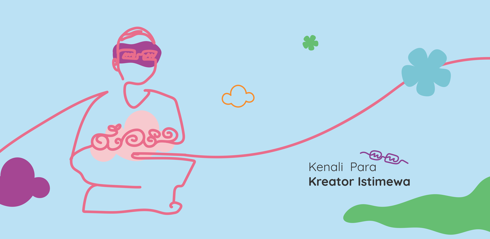
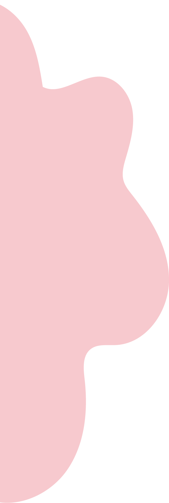
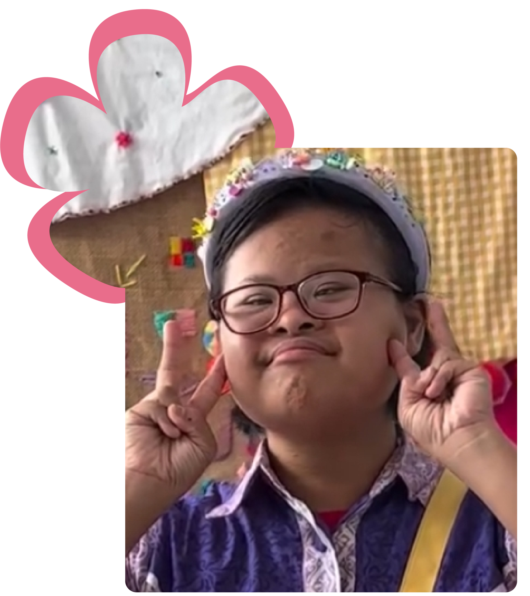
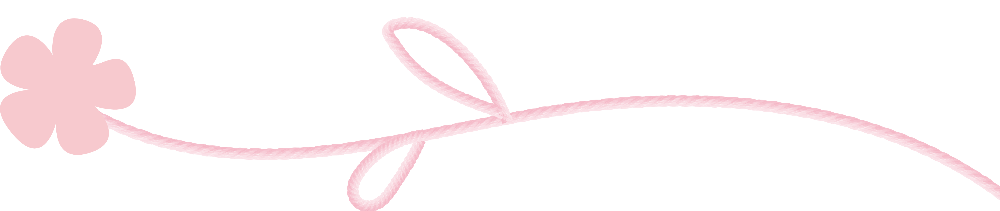
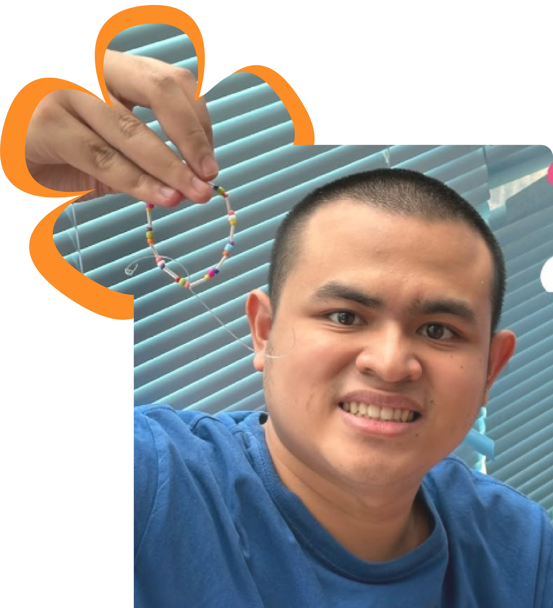

Mutiara

Lampu Meriah, salah satu kerajinan yang dibuat Muti. Dia multitalented, bisa bermain drum, bernyanyi dan bermain bola bowling. Apalagi ketika meronce dia sangat telaten dan teliti. Sttt.. dia suka jahil dan jago menggombal crafter lainnya.

Rafi

Happy Keychain, salah satu kerajinan yang dibuat Rafi. Meski, Rafi mengidap Neurodivergent atau perbedaan cara kerja otak dengan tipikal, dia suka sekali bermimpi, bernyanyi dan bercerita. OH IYA, dia bercerita pernah bermimpi kalau dia sedang meronce juga loh.